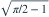
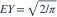

Z 为标准正态变量，Y=|Z|。Y 的标准差与均值之比为？
- A

- B

- C

- D

我已思考，展开答案与解析
正确答案：D

，。变异系数为二者相除，化简得所给平方根。
易错提醒先明确分布参数、独立性和统计量的定义，再进行计算。
南审 813 · 2021 · 第1页 一·1；从大题提取考点并重写为单选
单选改编；题干与选项已重新编排
查看参考来源


，。变异系数为二者相除，化简得所给平方根。南审 813 · 2021 · 第1页 一·1；从大题提取考点并重写为单选
单选改编；题干与选项已重新编排
查看参考来源